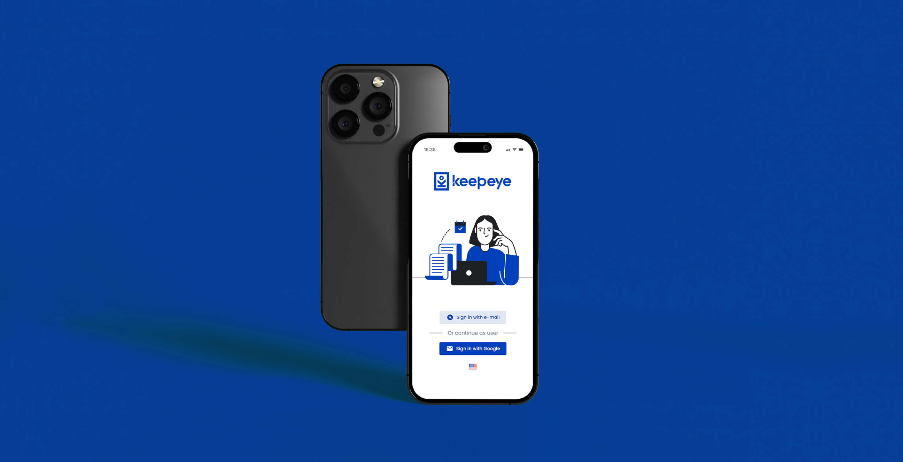
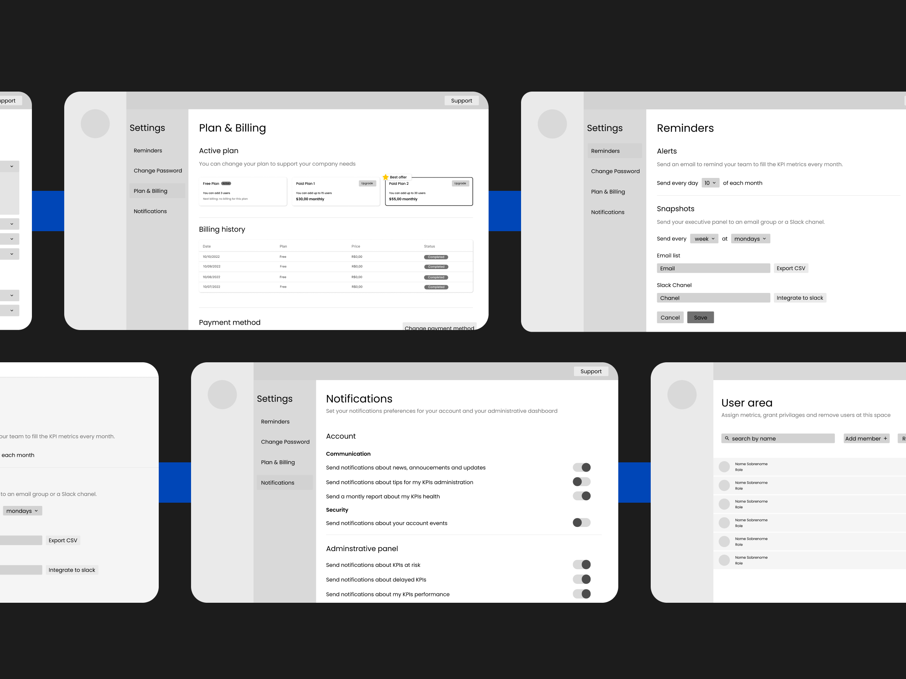
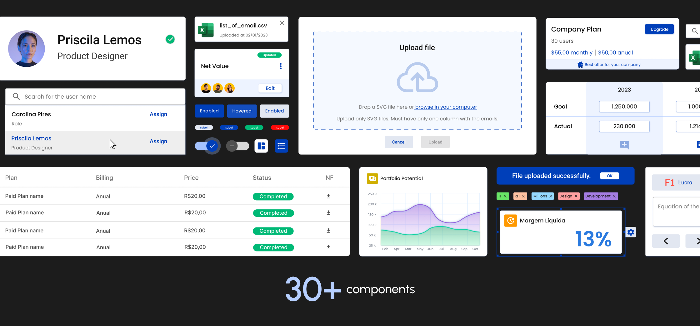
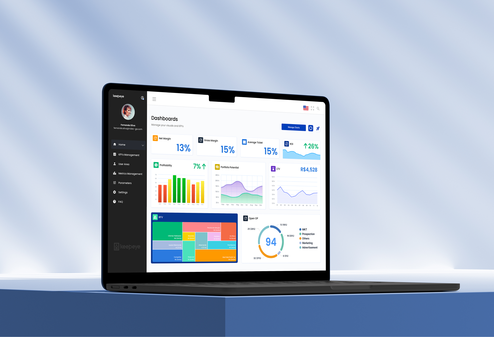
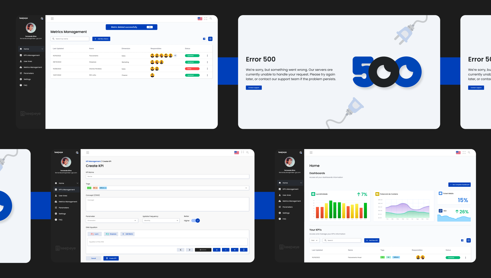

Dojo needed a SaaS product to stabilize its business. I led the research, designed the system, wrote front-end code, and mentored a developer through her transition to design. The result: a KPI platform with an 8.8/10 satisfaction score that gave the company its first source of recurring revenue.

The Business Case
Dojo Smart Ways operated entirely on project-based work: a model with variable revenue and constant labour demand. When one project ended, another had to begin. There was no stable recurring income, no product the company owned, no way to grow without growing headcount.
The opportunity came from a tool Dojo had previously built for Nidec: an internal metrics platform. It worked, clients liked it, and the underlying problem it solved was clearly not unique to one company. The decision to productize it into a SaaS was a strategic bet on recurring revenue. Keepeye was the bet.
The User Problem
Companies that work with operational KPIs rarely have a single place to look. They rely on a patchwork of Excel files, Google Sheets, and scattered Power BI dashboards, each maintained by different teams and using different formulas for the same metric. When leadership asks for a number, the answer depends on who you ask.
The result: low confidence in data, time spent reconciling reports instead of acting on them, and decisions made on numbers nobody fully trusts. The problem was not the absence of data. It was the absence of a single reliable version of it.
The problem was not the absence of data. It was the absence of a single, trustworthy version of it.
Process
Phase 01 · Discover
The Nidec tool gave us a starting point, not a solution. We ran usability sessions on it to surface what worked and what consistently broke down, before designing anything new. We also interviewed professionals who worked with KPIs and metrics daily: not general users, but domain experts who could tell us where existing tools failed in practice, not in theory.
Phase 01 · Quantify
Interviews give depth, but they can mislead. A strong opinion from one person becomes a pattern only when confirmed by more. We sent a structured survey to a broader sample of market professionals who use metrics tools day-to-day. The goal was to validate whether the pain points we found in interviews were structural problems or edge cases. They were structural.
Phase 02 · Define
With a small team and a fixed development window, we could not build everything. We benchmarked competing tools to map the market, then scored all identified opportunities using RICE: Reach (how many users benefit?), Impact (how meaningful is the improvement?), Confidence (how sure are we?), and Effort (how much does it cost to build?). RICE turns prioritization from a debate into a decision.
Phase 03-04 · Build
Once priorities were set, I designed the information architecture and all screens and components. Then I crossed roles: I contributed directly to the front-end implementation in Angular and Tailwind CSS, working alongside the developers throughout the build phase. After launch, we ran validation interviews with internal and external users to measure the result.

What Research Revealed
Data Fragmentation
One metric, many versions
Across interviews and the survey, the most consistent finding was that the same KPI had different values depending on who calculated it. Marketing used one formula for gross margin. Finance used another. Leadership trusted neither. The absence of a shared calculation engine meant the data was always contested.
Tool Gap
Built for analysts, not managers
Benchmarking revealed that most KPI tools required technical configuration or data analyst involvement to produce a usable dashboard. Managers who needed the numbers ended up depending on a third party to create the view. The opportunity was a tool that a manager could own end-to-end, without needing SQL or a BI specialist.
Trust Deficit
Bad data leads to paralysis, not bad decisions
A recurring theme in interviews: when professionals do not trust a number, they do not act on it: they investigate it. Meetings turn into data reconciliation sessions. Decisions get delayed. The cost is not a wrong call; it is paralysis. Keepeye's goal became making a number trustworthy the first time someone looks at it.
The Product
The RICE exercise shaped the feature set directly. What scored highest was not always what we expected, but the research consistently pointed toward the same needs: centralization, formula consistency, and managerial autonomy.
Core Feature
KPI Dashboards
A centralized view where managers can see all active KPIs at a glance, with real-time status, historical trends, and goal tracking. The design prioritized readability over density: the first view should answer "how are we doing?" without requiring any interaction. Drill-down is available, but the summary is always sufficient on its own.
Core Feature
Metric Formula Calculator
One of the highest-scoring features in the RICE exercise, and the one that most directly addressed the trust deficit. The built-in calculator lets users define the exact formula behind each metric, with variables, operations, and dependencies, so the same calculation is used every time, by everyone. When two people look at the same gross margin number, they are looking at the same formula. This turned Keepeye from a dashboard tool into a data trust layer.
Core Feature
KPI and Metrics Management
A full management layer for the indicators themselves: create, edit, categorize, and link KPIs to the underlying metrics that feed them. Research showed that most teams track between 15 and 40 active KPIs, each with different owners, cadences, and data sources. The management view had to handle that complexity without becoming a spreadsheet itself.
Core Feature
User Area and Access Control
Enterprise KPI tools are always multi-user, but different users have different relationships with the data: some configure, some monitor, some only read. The user area defines roles, permissions, and data scope so that an operational supervisor sees floor metrics while leadership sees consolidated results. Role definition was one of the earliest IA decisions and shaped the information hierarchy of the entire product.



How I Worked
Full-Stack Contribution
My role did not stop at handoff. After designing all screens and the design system, I joined the implementation as a Front-End Developer, contributing directly to the Angular and Tailwind CSS codebase alongside the engineering team. Designing and building in the same project closes the gap between intent and execution: I could see where the design needed to be adjusted for implementation reality and adjust it without a translation layer.
This also meant I understood constraints before they became blockers. When the team hit a component complexity problem, I was in the room to solve it at the source.
Mentoring in Transition
One member of the development team was actively migrating from front-end development into UI/UX design. I mentored her through the process during the project: sharing design decision reasoning, reviewing her work, explaining the connection between visual choices and user behaviour, and giving structured feedback on interface decisions.
Mentoring sharpened my own thinking. Explaining why a pattern works forces you to articulate principles you often apply instinctively. It was one of the most useful parts of the project.
Outcomes
Full ownership compresses every lesson. At Keepeye, research, prioritization, design, code, and mentoring happened in the same project. Design decisions compound: what you skip in discovery becomes a problem in delivery.